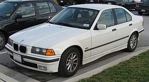

3 series e36

BMW 3-й серии (E36) — третье поколение легковых автомобилей 3-й серии
немецкого автоконцерна BMW, выпускавшееся с 1990 по 2000 год. Модели
этого поколения стали больше, получили элегантный обтекаемый кузов и
изначально создавались как четырёхдверные, в отличие от в основном
двухдверных автомобилей второго поколения. Выпуск четырёхдверных седанов
(нем. Limousine) начался в конце 1990 года. В 1992 году началось
производство двухдверных купе (нем. Coupé), а в 1993 году появились
открытые кабриолеты (нем. Cabrio). Укороченная версия автомобиля с
трёхдверным, с большой задней дверью, кузовом хэтчбек (нем. Compact)
появилась в конце 1993 года, а вместительный универсал (нем. Touring)
стали выпускать, начиная с 1995 года. Спортивная версия M3 появилась в
1992 году, сначала в виде купе. В 1994 году к нему присоединились модели
с кузовами кабриолет и седан. Всего было изготовлено 2 745 780
автомобилей третьего поколения